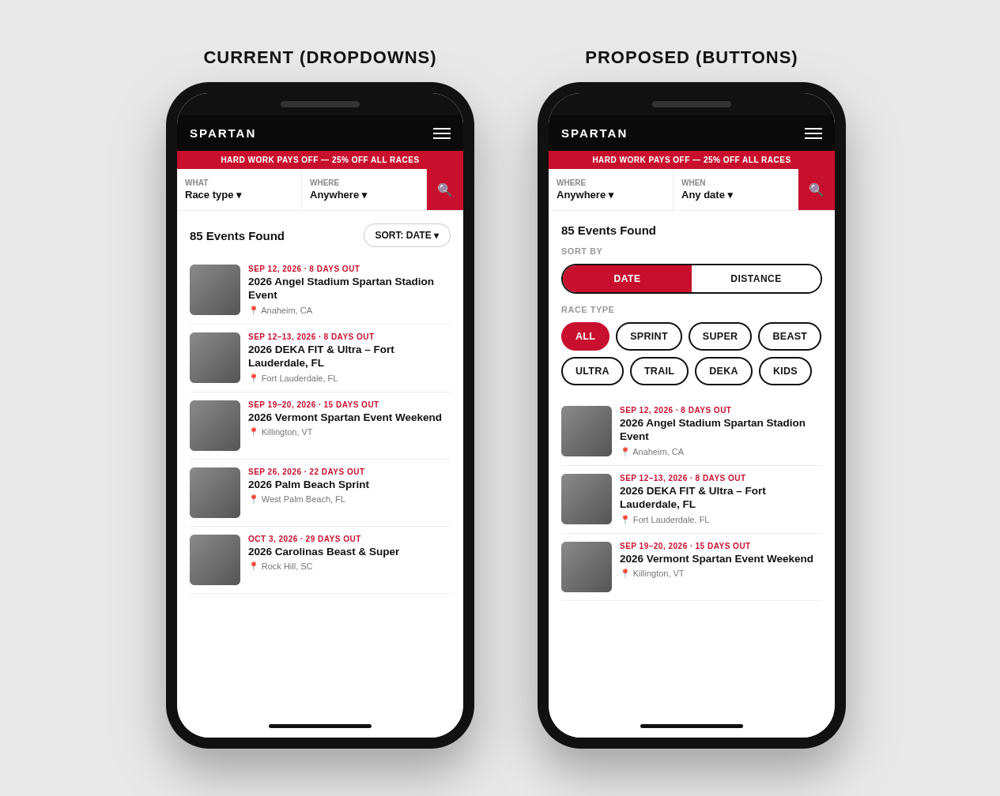
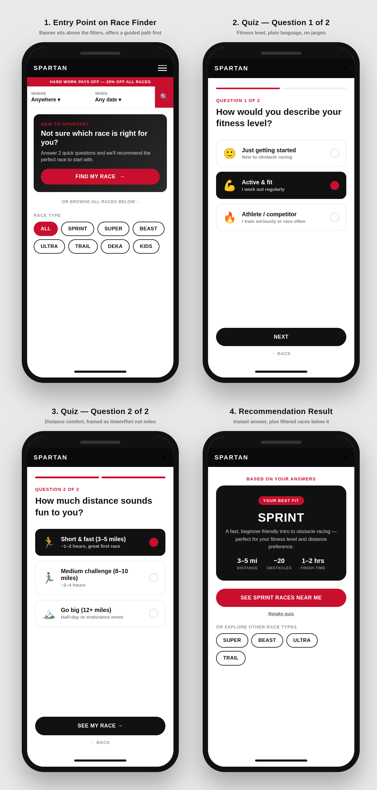
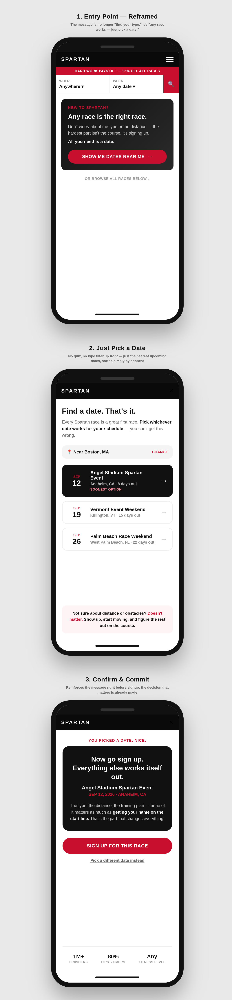

Concept mockups for the mobile race finder at spartan.com/en/race/find-race. Static design concepts for review, not live builds.
Replaces the sort dropdown with a two-button Date/Distance toggle, and adds race-type filter chips beneath it so users can filter with fewer taps instead of opening dropdown menus.

For first-time visitors who don't know what Sprint, Beast, Ultra, or DEKA mean — a 2-question quiz (fitness level + distance comfort) recommends a race type instead of making them decode jargon.

Reframes the decision entirely: race type and distance don't matter as much as just committing to a date. Removes filters up front in favor of a simple upcoming-dates list and reassurance messaging, with trust stats reinforcing the signup step.
